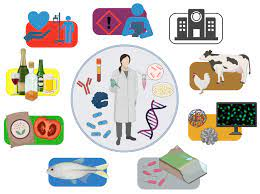

Biotecnología

La biotecnología incluye a un conjunto de actividades que acompañan al hombre desde tiempos remotos en gran parte de su vida cotidiana. ¿Cuáles fueron los hechos históricos considerados hitos en el desarrollo de la biotecnología, desde la fabricación de cerveza, hasta los desarrollos modernos? La misma, se divide en diversas etapas: